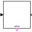
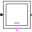

PartialStepPartial step with one input and one output transition port |
Parameters (2)
| nIn |
Value: 0 Type: Integer Description: Number of input connections |
|---|---|
| nOut |
Value: 0 Type: Integer Description: Number of output connections |
Outputs (1)
| localActive |
Type: Boolean Description: = true, if step is active, otherwise the step is not active |
|---|
Connectors (2)
| inPort |
Type: Step_in[nIn] Description: Vector of step input connectors |
|
|---|---|---|
| outPort |
Type: Step_out[nOut] Description: Vector of step output connectors |
Components (2)
| stateGraphRoot |
Type: CompositeStepState |
|
|---|---|---|
| outerStatePort |
Type: OuterStatePort |
Extended by (4)
|  |
Modelica.StateGraph Ordinary step (= step that is not active when simulation starts). Connector 'active' is true when the step is active |
|
Modelica.StateGraph Ordinary step (= step that is not active when simulation starts) |
|
|  |
Modelica.StateGraph Initial step (= step that is active when simulation starts). Connector 'active' is true when the step is active |
|
Modelica.StateGraph Initial step (= step that is active when simulation starts) |